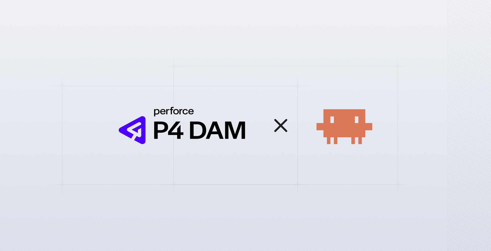

Problem Statement
P4 DAM lets users review FBX and GLTF models directly in the browser, but the viewer only offered a single solid-colour background. That's fine for a quick look and wrong for the audience that actually matters here — game developers who'll ship the same asset into Unreal or Unity later that week. A polished hero prop looks correct in a studio render and wrong in a flat grey void, so reviewers either trusted their imagination or pulled the file out into their own DCC tool to see it properly. Both options broke the review flow.

The workflow, told through this feature
This was the first feature I took end-to-end on a Claude Code workflow I'd been refining for a few months. The point of the case study is the workflow; HDRI backgrounds are the artefact that proves it.
1. Gather requirements on a call with the PM
I sat down with my PM and worked through the usual questions — what does a successful outcome look like, what are the deliverables, what's must-have vs nice-to-have. The acceptance criteria flagged custom HDRI upload from a DAM asset as nice-to-have and "out of the box, right now" as must-have. That single line shaped the whole scope decision later.
2. Gather requirements, auto-transcribe the call
The meeting platform generated a structured summary of the call — context, decisions, action items. I fed the summary through an AI assistant to convert it into a properly-shaped ticket in our project-management tool, ready for sprint planning rather than another rewrite.
3. Lightweight wireframe + inspiration imagery
Rather than draw every state in Figma, I built a small wireframe and pulled inspiration from Mobbin and Dribbble for the segmented-control pattern. The point of this step is to give Claude Code a visual target — enough context to make sensible decisions, not enough to over-constrain it.
4. Feed the full context into Claude Code and build in real code
The ticket, the wireframe, The Force Design System, a short CLAUDE.md describing the project conventions, and a stack of MCP servers (Figma and project-management) all sit in one workspace. Claude Code scaffolds a fresh branch, spins up the dev server and starts work against the actual 3D viewer. The build is real React on The Force Design System, not a Figma frame.
5. Refine with a tiny team: one designer, one dev, one PM
The review loop is deliberately small. Three people, fast cycles, shared screen, edits happen in Claude Code while we talk. The principle designers were forming a design system at the top of the funnel; I needed to help the people at the bottom of the funnel ship things, so this is the loop I optimised for.
6. Hand off as MD files, screenshots and a working branch
The handover isn't a Figma frame. It's a Markdown document describing the change, a screenshots/snapshots file taken from my machine at the point of handover, and the branch itself. The screenshots matter — if a developer pulls the branch and what they see doesn't match the snapshot, they know to flag it immediately rather than discover it three days into review.

The artefact: what actually shipped
The "Environment" section of the 3D viewer was renamed to "Background and grid" and now sits on top of a segmented Color / Image (HDRI) control. Color keeps the original colour-picker behaviour untouched. Image (HDRI) reveals a 2×1 grid of preset tiles, each one a curated lighting environment with a short label and description. Clicking a tile loads the HDR file, applies it as the scene background, and uses it as the lighting and reflection source. A checkmark badge marks the active preset. Reset returns the user to Color mode and the default preset.
The two shipped presets cover the most contrasting review contexts, with a wider set of environments lined up as the next iteration:
| Preset | Why it's in the set |
|---|---|
| Photo Studio | Warm indoor studio with natural window light. The default, and the most neutral "show me the asset honestly" option. |
| Outdoor | Bright daylight exterior with trees and sky — the obvious counterpart for outdoor-context assets and the visual opposite of the studio default. |
Design decisions worth calling out
Curated presets, not open upload first
There was a real temptation to lead with "upload your own" — DAM is, after all, a library of assets. But the must-have was "out of the box, right now". The user problem is "I want to see this model in a believable environment", not "I want to manage my HDRI library". A small set of strong defaults solves most of the problem in one click; custom upload is a follow-on once we've validated the simpler path.
HDRIs from Poly Haven, on a CC0 licence
Image-based lighting needs HDR data, not regular JPEGs — the high dynamic range is what produces convincing reflections and lighting falloff on PBR materials. Poly Haven hosts professionally-shot, 4K, CC0-licensed HDRIs. The acceptance criteria flagged "if paid assets are needed, get approval before purchasing"; CC0 sidesteps that entirely. No attribution, no per-seat licensing, no procurement conversation.
A segmented Color / Image control rather than a single stack
The old panel had one job: pick a colour. Adding HDRIs without a clear modal switch would have meant either burying the colour picker (breaking existing users) or jamming both into one stack (visually noisy, unclear which one wins). A segmented control makes the choice explicit, mirrors a pattern users already recognise, and leaves a slot for a third mode later (custom upload) without a redesign.
"Background and grid", not "Environment"
"Environment" is technically correct but reads like jargon, and worse, it conflates the visual backdrop with the lighting setup. "Background and grid" describes what's actually in the section. That's consistent with the wider onboarding work, where unclear terminology keeps showing up as the recurring issue.
Honest scope: what's parked, and why
The handoff document flags this honestly. The feature is functionally complete in one of the two model viewers and ready for engineering review on its feature branch. These items are explicitly parked:
| Parked work | Why |
|---|---|
| HDRI lighting effect on the model itself | Backgrounds and reflections work. Material shading doesn't yet — a recent rendering-engine update tightened how textures are handled, which forced a safer fallback that's visually less impactful. Needs another pass. |
| Preset switching on already-converted materials | Switching presets needs to update the environment map on materials that have already been converted, not just on the next load. |
| Parity across both model viewers | The same treatment needs porting from the first viewer to the second. |
| Automated tests | None yet. Manual review only at this point. |
| Custom HDRI upload from a DAM asset | The original nice-to-have. Parked as the next ticket once the core experience is solid. |

Why this workflow worked for the team
I presented the workflow back to the wider design team and gathered feedback from developers, writers and PMs across the company. Three things came back consistently:
Better handovers than Figma alone
Developers said that working from a Markdown handoff doc plus a real branch was clearer than a Figma frame plus a written spec. Less interpretation, fewer "what did you mean here" questions in refinement.
Critique happens in the build, not next to it
In review sessions, feedback could be applied in Claude Code directly and worked through afterwards. No "we'll come back to this in the next round of Figma updates".
Faster time to market
By the time engineering picked the ticket up, the prototype was already on The Force Design System, the rationale was written down, and the parked work was explicit. The conversation moved from "what is this?" to "what do we need to merge it?"
What I learned by presenting this to the design team
Be kind. AI is moving fast and not everyone is at the same speed.
Some people on the team are further ahead with AI tooling, some are slower, some are less technical. Perforce is a diverse global team — Belfast, India, Sweden, Estonia and more — and the workflow only works if the whole team can pick it up. Bring people along instead of leaving them behind.
Don't leave anyone out. Include developers, writers and PMs from the start.
Every team member has a part to play in shaping these workflows. The best results came from building them together, not presenting a finished method and hoping people followed it.
Don't gatekeep. Share what you know and make it fun.
Designing in code unlocks the things Figma can't easily do — 3D scenes, animation, small interactive details that surprise people. With Claude Code I'm able to build truly interactive product prototypes that engage users rather than just satisfy a spec. That's worth sharing, not hoarding.
Conclusion
This was the first feature I took from a PM call to a working build entirely through an AI-assisted workflow. The artefact is HDRI backgrounds in the P4 DAM 3D viewer — useful in its own right for game developers reviewing assets under realistic lighting. The bigger result is a workflow the rest of the design team, and the wider product team, can pick up and use on their own features.